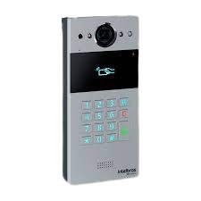
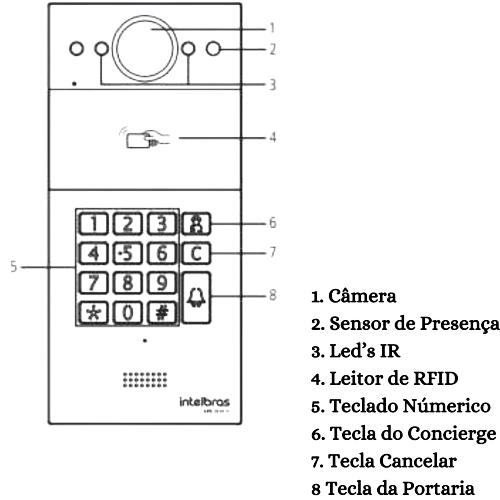
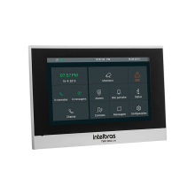
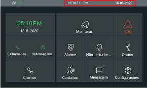
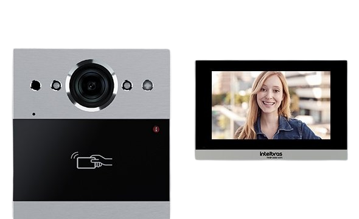
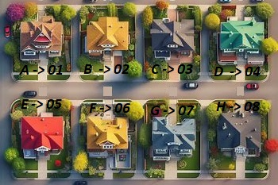
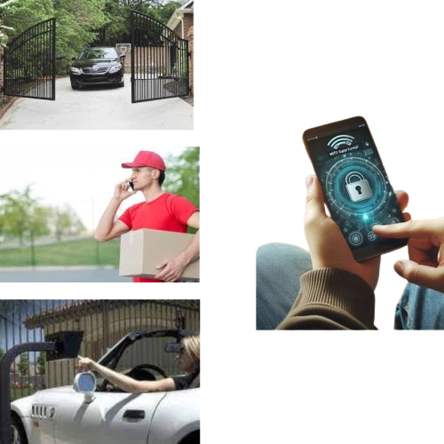

Conhecendo o Video Porteiro


Conexão Direta: Realize e receba chamadas diretamente das casas. Tecla de Concierge: Acesso ao porteiro remoto com um toque no ícone de pessoa em azul (serviço opcional). Teclado Retroiluminado: Facilita o uso noturno, além de possuir proteção contra chuva e sistema anti-vandalismo.


Ele é um terminal de vídeo IP universal que suporta chamadas com vídeo e alta qualidade de áudio, possui display colorido com touch screen capacitivo de 7 polegadas e resolução de 800 × 480 px; é uma solução eficiente para soluções de interfonia de áudio e vídeo. Ele é capaz de realizar chamadas de áudio entre apartamentos, envio e recebimento de mensagens de texto, comunicação com centrais de telefonia e interfones.
Procedimento para Visitantes

Ao chegar ao condomínio, o visitante deverá digitar o número correspondente à casa no teclado do vídeo porteiro. O morador, ao receber a ligação, poderá visualizar o visitante através do vídeo e se comunicar com ele. Para permitir a entrada do visitante, o morador deverá digitar *01. O portão se abrirá automaticamente e se fechará após um tempo pré-determinado. Todas as ligações e aberturas de portão são registradas. É possível acessar um log detalhado de todos os acessos, proporcionando um histórico completo para segurança e controle.
Como Funciona Chamadas

Cada residência é identificada por um número único que é composto por 2 primeiros referentes a quadra, os 2 seguintes conjunto, os 2 proximos ao lote, o penultimo a casa e o ultimo ao aparelho cadastrado(Ramal) por padrão de ligação.Caso discado apenas de 01-até-08 e acionada a discagem rapida onde liga para a casa referente a quele numero, caso não atendida no ramal 0 da casa e direcionado ao proximo, finalizando na portaria. Digitando 0, a ligação é direcionada para a portaria.
Acesso ao Condomínio
